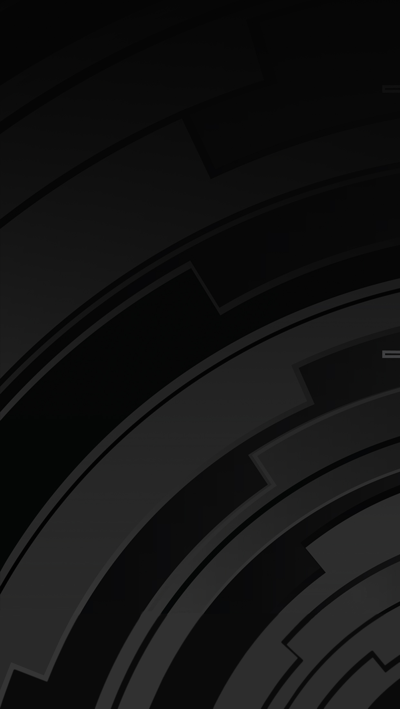

<ion-view name="main">
    <ion-content scroll="false">
        
        <div id="radio-player" class="radio-player">
            <div class="col-4">
                
            </div>
            <div class="col-2">
                <div class="radio-control-container">
                    <video id="radioPlayer">
                        <source src="http://9433.live.streamtheworld.com/CONCIENCIA_SO1.mp3" type="audio/mpeg" />
                    </video>
                    
                    
                    
                    
                    
                </div>
            </div>
            <div class="col-4">
                <label id="radio-topic">Radio en línea</label>
            </div>
            <hr/>
            <label id="noticias_title">Últimas noticias</label>
        </div>

        <div class="news-container">
            <div class="news-list-item" ng-repeat="(index, news) in newsList" ng-click="onNewsClicked(index)">
                
                <label id="news-title" class="news-title">{{news.title}}</label>
            </div>
        </div>

        <div class="main-bottom-bar">
            
        </div>
    </ion-content>
</ion-view>